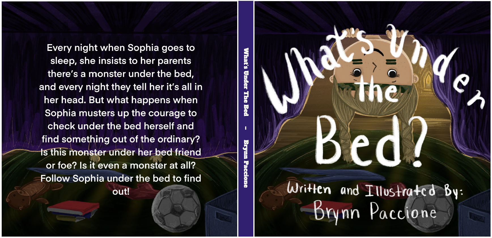

Chosen Works
Dennis the Dinosaur


Dennis the Dinorsaur is a mini childrens book that consists of four spreads (8 pages) all based around the illiteration of using the letter "D". Designed and drawn in Procreate
All Too Well

Based on Taylor Swift's his song All to Well for my final project in Drawing: Visualization I chose to create a cartoon or graphic novel layout depicting the storytelling and lyrics written her song.
Happy Day


Happy Day is currently the childrens book I am illustration for commision. Happy Day is all about a celebration from parents to child finding out that a mother is pregnant. Based on a true story and family tradition Happy Day shows how fun childhood and creating magic as a parent can be. Here are some chosen pages from the book!
What's Under the Bed?
What's under the bed is an orginal story I created during my sophmore year. A semester long project of iteration, and expirimentation, I decided to create an orginal childrens book which was to be presented in front a panel of faculty from Stamps School of Art and Design. They would critique my presented project and help advise me on my next two years within the program, including if I should continue within the BFA program at Stamps. Luckily I passed and currenlty am taking upper level animation and illustration courses!


Underwater Bubbles

Named "Underwater Bubbles" this illustration is based off of a photo I took of one of my cousins who loves to swim in the lake.